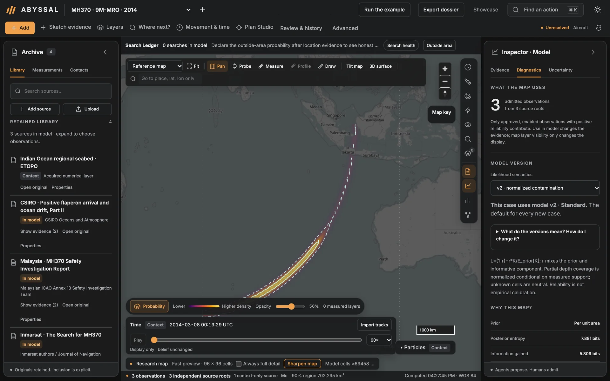
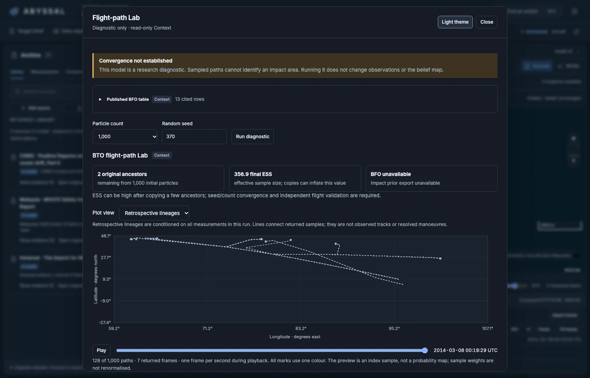
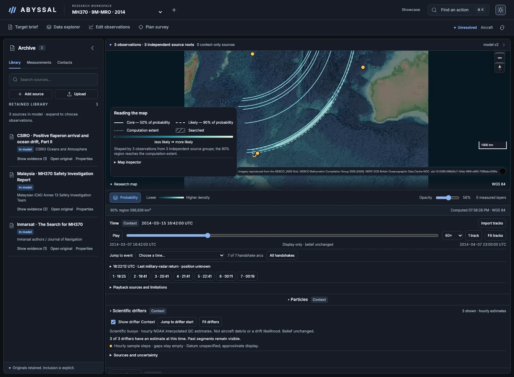
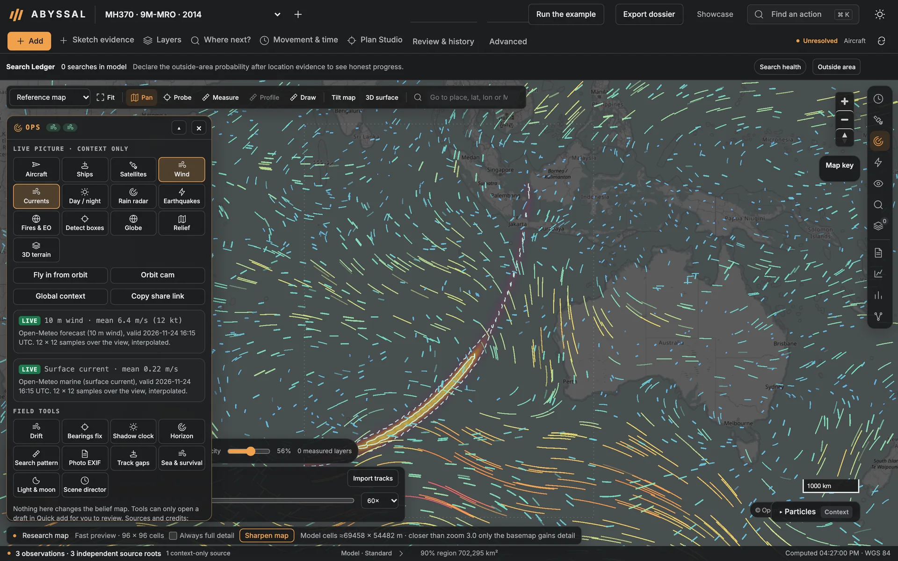
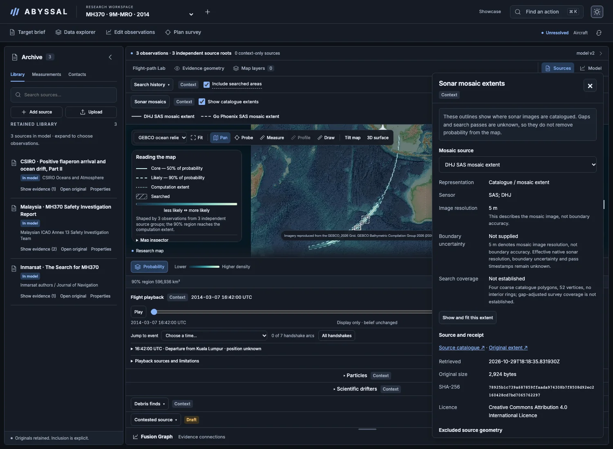
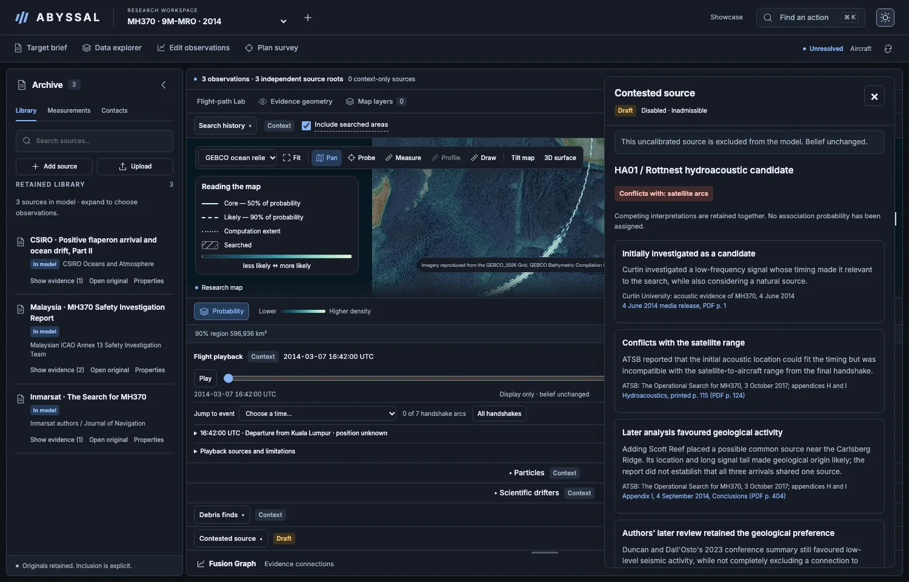
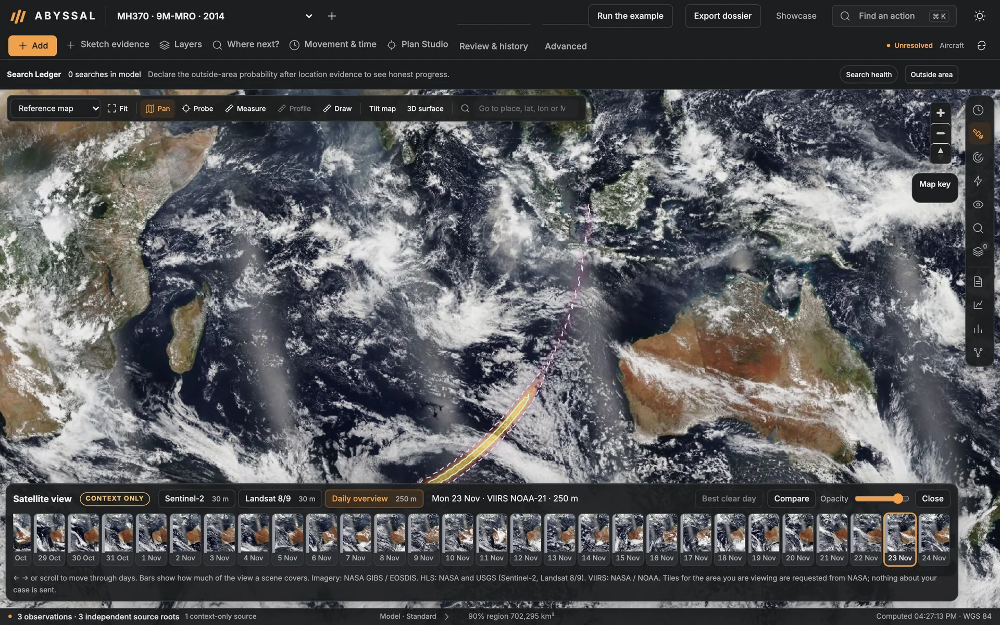

Malaysia Airlines flight 370 disappeared on 8 March 2014 and has not been found. Over twelve years, seabed surveys by the Australian Transport Safety Bureau (ATSB) and Ocean Infinity have imaged more than 230,000 km² of the southern Indian Ocean along the seventh Inmarsat arc without locating the aircraft. It would be easy to build a bespoke, one-off MH370 dashboard with hardcoded checkboxes that apply to no other search on Earth. That is the wrong engineering standard. What follows treats MH370 inside ABYSSAL's general-purpose investigation workbench — the exact same evidence ledger, live toggling controls, provenance fusion graph, sequential Monte Carlo flight filter, Ops Console, and Plan Studio allocator used on any maritime or aerial search — paired with a raw-data reanalysis of every public measurement.
Everything in this case study uses real public data with cryptographic receipts (URL, timestamp, byte length, SHA-256 digest, licence). Every forward model is calibrated against independent physical truth — ground-station calibrations, the aircraft's own ACARS weather reports, catalogued Indian Ocean earthquakes, published ATSB sonar contacts — before it is allowed to score MH370. Nothing synthetic or simulated is admitted.
Not found. Two independent satellite channels — timing alone (Doppler discarded) and timing plus Doppler — both place the end of a steady autopilot flight between 37.4°S and 39.7°S on the 7th arc. Measuring the published ATSB Phase 2 sonar mosaic directly from pixels (~60 m resolution) shows 99.67% of the ±25 NM band across 36.0°S–39.45°S is imaged: coverage gaps can hide a 250 m debris field for only 0.013% of the prior. If the flight was steady, the wreck is in one of three places: just south of the searched limit (39.45°S–40.5°S, never searched — 36.0% of the steady posterior, ~29% after second-round acoustic and altimeter nulls, ~3× the density per km² of any alternative), inside the densest searched core (37.5°S–38.6°S) imaged but unrecognised in shadowed terrain, or beyond ±25 NM after a glide that the final two Doppler measurements argue against (glide posterior weight 0.17).
01The live workspace: toggling evidence, provenance, and model diagnostics
In ABYSSAL, nothing enters the belief surface implicitly. Primary documents, numerical grids, and derived likelihoods sit in the retained Archive with their original files intact; admitting or removing any observation immediately recomputes the posterior in double-precision log space and reports the exact change in Shannon entropy and 90% search area.
The figure below shows this running live on the MH370 case. Clicking Remove on a single admitted observation — CSIRO's positive flaperon recovery and ocean-drift interpretation — updates the map on the spot: the 90% highest-density region widens from 596,936 km² to 756,423 km², Shannon uncertainty rises from 10.29 to 10.73 bits, and an immediate Undo control lets an analyst test sensitivity without mutating the audit history. Every other admitted source displays its exact Kullback–Leibler contribution (for example, 4.358 bits for the combined Inmarsat satellite handshakes).

Because real investigations routinely cite five papers that all trace back to one original measurement, ABYSSAL maintains a live Fusion Graph linking every retained source root (ETOPO seabed bathymetry, CSIRO drift analysis, Malaysia Annex 13 Safety Report, Inmarsat Journal of Navigation) to the claims and observations derived from it. Clicking any node inspects its downstream impact on the posterior and flags shared provenance before correlated sources can be double-counted.

Alongside the Fusion Graph, the right-hand Inspector · Model pane exposes three live tabs — Evidence, Diagnostics, and Uncertainty. Rather than hiding how likelihoods are combined, Diagnostics states the exact contamination semantics in force (v2 · normalized contamination, \(L = (1 - r) + r\,K / \mathbb{E}_{\text{prior}}[K]\)), total posterior entropy (7.881 bits at preview resolution), and total information gained over the uniform area prior (5.309 bits).

02Satellite physics, upper-air winds, and the BTO particle filter
At 16:42 UTC on 7 March 2014, Boeing 777-200ER 9M-MRO departed Kuala Lumpur for Beijing. After crossing waypoint IGARI over the South China Sea, its secondary transponder went silent; Malaysian military primary radar tracked a turnback across the Malay Peninsula past Penang and northwest along airway N571 until 18:22:12 UTC. For the next six hours, the only live telemetry came from the aircraft's Inmarsat Classic Aero satellite data unit (SDU) answering hourly log-on interrogations from Inmarsat-3F1 until 00:19:29 UTC.
Each handshake yields two independent physical observables: the Burst Timing Offset (BTO) — total round-trip signal propagation time from the Perth ground earth station through Inmarsat-3F1 to the aircraft and back — and the Burst Frequency Offset (BFO) — the received carrier Doppler shift driven by relative line-of-sight velocity, the satellite's \(\approx 1.6^\circ\) orbital inclination, and SDU uplink pre-compensation:
Before scoring a single MH370 trajectory, ABYSSAL's Classic Aero forward model was validated against published calibrations from Ashton et al. (2015) and Davey et al. (2016): reproducing the 88 Hz ground calibration (Table 5) to 0.3 Hz, the known 17:07 UTC aircraft state (Tables 7–8) to ~1 Hz, and all 12 validation rows (Table 9) within 1.5 Hz — catching an inverted downlink Doppler sign on the first draft before any flight path was run.
Inside the workspace, ABYSSAL's Flight-path Lab runs sequential Monte Carlo (SMC) particle filtering across the BTO handshake rings (`1,000–200,000` particles, explicit seed control, and retrospective lineage diagnostics). Crucially, it flags Convergence not established whenever particle degeneracy leaves only a handful of original ancestors (e.g. `2 original ancestors`, `356.9 final ESS` from `1,000` particles), preventing degenerate particle clouds from being exported as an operational prior.

To solve the full wind-aware flight problem quantitatively, hourly ERA5 upper-air winds and temperatures (175–350 hPa, \(0.5^\circ\) grid) were pulled from Google Cloud's ARCO-ERA5 archive and checked directly against the aircraft's own ACARS reports prior to loss:
| ACARS time (UTC, FL350) | Measured wind | ERA5 wind | Temp diff |
|---|---|---|---|
| 17:01:43 | 069.6° / 17.4 kt | 069° / 19.4 kt | −1.1 °C |
| 17:06:43 | 070.0° / 17.1 kt | 067° / 17.3 kt | −1.1 °C |
Across 4,400 wind-aware autopilot configurations in three families — constant Mach (1,100 configs), falling Mach long-range cruise (2,200 configs), and weak-assumption Mach 0.55–0.86 with inflated 15 Hz BFO noise (1,100 configs), marginalising over 0 or 12 NM lateral offset past MEKAR — geodesic (LNAV) and constant-true-track solutions fit all 13 measurements cleanly (\(\chi^2 \approx 6\)) and cross the 00:19:29 UTC 7th arc between 37.2°S and 39.8°S (median 38.15°S–38.50°S).
The BTO-only test and the final dive
To test whether BFO physics is carrying the inference, we discarded every BFO measurement completely and ran a 5,040-cell timing-only scan (Mach 0.45–0.86, 1° control-angle grid with Gauss–Newton refinement). 90% of the timing-only mass still ends between 39.7°S and 37.4°S (median 38.4°S). Every steady cell north of 36°S carries posterior weight below \(10^{-9}\). When those timing-only tracks are scored against the BFOs they never saw, their BFO RMS residual is 3.7–5.9 Hz — right at the published noise floor. Both satellite channels agree independently.
At 00:19:29 and 00:19:37 UTC, following fuel exhaustion and automatic APU restart, two BFO bursts arrived eight seconds apart. Re-deriving vertical rate gives a descent accelerating from ~3,100–6,000 ft/min to ~13,600–16,500 ft/min (~0.67 g downward), while clean carrier-to-noise ratios (\(C/N_0 = 40.6\) and \(43.4\text{ dB-Hz}\)) show the antenna remained in satellite view. Folding the final-BFO dive/glide likelihood ratio (base \(0.2\), swept \(0.05\text{–}0.5\)) cuts the posterior weight of an extended glide (\(|n| \le 110\text{ NM}\)) from 0.50 down to 0.17, keeping 82.9% of the posterior within ±25 NM of the 7th arc.
0336 years of NOAA drifters, live currents, and correlated debris
Twenty-seven pieces of confirmed or likely 9M-MRO debris washed ashore across Réunion, Madagascar, Mozambique, Tanzania, and South Africa starting with the flaperon on 29 July 2015 (508 days after loss). In ABYSSAL, real NOAA Global Drifter Program hourly QC tracks and all seven Inmarsat handshake arcs can be inspected directly as context layers alongside the 7th-arc posterior, while the Ops Console overlays real-time 10 m wind forecasts (`mean 6.4 m/s`) and surface ocean current streamlines (`mean 0.22 m/s`) across the search corridor.


To turn the 27 debris recoveries into an honest likelihood surface, ABYSSAL ingested 36 years of NOAA Global Drifter Program 6-hourly tracks (1990–2025: 6.0 million fixes, 4,700 drifters, 3.5 million undrogued fixes). Our first attempt — a \(1^\circ\), 4-day Markov transition matrix — was rejected as over-diffused after failing a direct empirical check: it predicted a ~5–7% Réunion arrival probability within 508 days from 39°S, whereas 0 out of 72 real undrogued drifters passing near 39°S ever reached Réunion within 508 days.

Replacing the Markov chain with direct censored drifter analogs produced a clean gradient (0/60–80 at 37°S–40°S; 0–1/40–60 at 32°S–36°S; 3–5/27–46 at 25°S–31°S). Under drifter-like windage across five independent find groups (avoiding double-counting correlated items riding the same wind and eddy field), drift favours ~29°S over ~38°S by ~20×, dropping to ~2–3× when the travel horizon is stretched 1.5× for the higher-windage flaperon tested by CSIRO. Pushing straight back in the opposite direction are two real null observations: zero MH370 debris ever found on Western Australia, and CSIRO's analysis of the March–April 2014 aerial surface search assigning near-100% sighting probability across 26°S–33°S where nothing was spotted.
04Sonar mosaics: pixel-measured coverage and 2,024-tile re-scan
In Bayesian search, negative evidence dominates the posterior — so an error in a searched-area polygon corrupts everything downstream. An early draft read search widths from report prose and inadvertently over-credited Ocean Infinity's 2018 strips across 32.5°S–36°S. Inside ABYSSAL's workspace, catalogue extents for the DHJ and Go Phoenix Synthetic Aperture Sonar (SAS) mosaics are inspected with full SHA-256 receipts and explicitly flagged Search coverage: Not established until actual pixel coverage is verified.

To measure true coverage without prose errors, ABYSSAL fetched Geoscience Australia's public Phase 2 bathymetry/sonar mosaic at zoom 11 (60.5 m pixels) and counted imaged pixels cell by cell. Total measured area: 120,522 km² (matching the ATSB's ~120,000 km²). North of ~35.5°S, the ATSB ±25 NM strip was only 42–69% imaged — explaining directly why Ocean Infinity opened its 2018 search there.
Inside the ATSB core band (36.0°S–39.45°S, ±25 NM: 59,607 km²), pixel counting settles the "hidden in a sonar gap" hypothesis definitively: 99.67% is imaged, leaving just 197.8 km² of holes, with the only sizeable gaps (15.6 km² and 51.3 km²) sitting at the far southern margin (39.1°S–39.25°S). Integrating the steady-flight dive prior over gap interiors at least radius \(R\) from every imaged pixel leaves just 0.013% for a 250 m debris field.
We then pulled 2,024 zoom-15 tiles (~3.8 m pixels, ~1,900 km² across 37.65°S–38.8°S within ±7.5 NM — roughly 25% of the entire steady prior) and ran them through ABYSSAL's local-residual anomaly detector. As a positive control, it flagged 16 of the 43 published ATSB contacts (median at the 88th local percentile). Inspecting the top 40 of 225 candidate clusters at 1–4 m resolution showed scarps, ridge crests, volcanic outcrops, swath seams, and isolated boulders — no angular aircraft debris fan. The takeaway is crisp: if MH370 sits inside the searched core, sonar did not skip over it — it imaged the site and failed to recognise it in steep terrain or acoustic shadow.

05Hydrophones, island seismometers, and leads tested and closed
Every major acoustic, seismic, radio, optical, and witness lead on MH370 was rebuilt from primary archives, calibrated against real physical controls, and tested statistically. In ABYSSAL's workspace, uncalibrated claims such as the HA01 / Rottnest hydroacoustic candidate (Curtin University's 4 June 2014 signal) are held explicitly as Draft · Contested source with conflicting satellite-arc geometry and ATSB Appendices H & I cross-referenced side by side.

To test the acoustic record directly from raw waveforms rather than summaries, we pulled 1.05 GB of raw 6 kHz IMOS CMST logger audio (Perth Canyon 3315/3376, Scott Reef 3250) plus 384 newly acquired Portland (3274) logger files covering the southern extension (`01:14:46–01:19:53 UTC`), clock-checked against Curtin's `01:33:44` (15.6 dB) and `05:03:01` (17.8 dB) reference events, alongside 6–9 March 2014 FDSN waveforms from 22 island & coastal seismometers.

- 22 island & coastal seismometers — closed, flat likelihood: Calibrated on 24 real same-week earthquakes (detecting Carlsberg Ridge \(M_w 5.07\), \(p = 0.0002\), and Central Indian Ridge \(m_b 3.99\), \(p = 0.003\)). Capped MH370 windows returned \(p = 0.29\text{–}0.97\). Uncapped spikes (\(p = 0.03\text{–}0.07\)) were traced by inspecting the raw waveforms directly to two uncatalogued local earthquakes (Christmas Island at `01:16:11 UTC` with a sharp vertical P-wave followed 35 s later by S-waves ~290 km away, and Réunion at `01:26 UTC`).
- IMOS hydrophones (Perth Canyon, Scott Reef, Portland) — weak / quiet: Covered Perth Canyon windows are quiet (`3–8 dB`, \(p = 0.36\text{–}0.97\)), and the 4-hydrophone weak-signal stack across 97 arc latitudes shows no standout peak.
- WSPR radio anomalies (145 MB March 2014 archive) — closed, no signature: Enrichment \(E\) on links crossing within 50 km of best LNAV (`38.1°S`) and magnetic-track (`33.6°S`) paths against 1,000–4,000 km controls across all 30 other nights gave \(E = 0.91\) (SNR jumps \(\ge 6\text{ dB}\)) and \(E = 0.62\) (drift) — crossing links were less anomalous than controls (\(p = 0.19\text{–}0.48\)).
- Maldives sighting, overflight seismometers, Gaofen-1 & DART buoys — closed by physics: Kudahuvadhoo sits ~2,000 km inside the 00:19:29 UTC 7th arc (BTO residual \(-13,200\;\mu\text{s}\)); MY.KUM and MY.IPM sample at 20 sps (10 Hz Nyquist, below jet noise); the 18 March Gaofen-1 object lies 732 km off-arc (0.85 m/s mean drift required for 10 days); and a ~4 GJ impact yields ~0.5 mm in 10–30 s waves at 1,000 km, attenuated at 4 km DART depth beneath metre-scale swell.
06Satellite imagery, altimeter blooms, and why 2014 SAR is unavailable
Inside ABYSSAL's Satellite View Time Machine, daily NASA GIBS / EOSDIS VIIRS 250 m overviews and 30 m Sentinel-2 / Landsat 8/9 swaths drape directly underneath the MH370 7th arc so imagery and cloud cover can be inspected in the exact coordinate frame of the posterior.

On historical March 2014 imagery, we audited every public orbital sensor along the 7th arc:
- MODIS Terra/Aqua true-colour & fuel-sheen drift: 32 NASA GIBS scenes (7–10 March 2014, ~250 m) paired with OSCAR currents + 3% NAVGEM wind drift of residual oil/hydraulic fluid (~1 m³). The southern extension (`39.45°S–40.5°S`) was 91–96% cloud-covered on 8 March, while clear-water 7 March control scenes produced `30–540` contrast specks per 10,000 km² — proving 8-bit MODIS outside sun glint (~0.93 DN ocean noise) cannot resolve a 1 m³ sheen.
- Jason-2 radar altimeter \(\sigma^0\) blooms (128 GDR-D/F passes, 8–12 March): 22 passes crossed the search box; Pass 077 overflew the predicted sheen of a `40.0°S` impact 11 hours after crash (8 March `11:25 UTC`, 7 footprints within 32 km) with flat backscatter (`+0.05 dB` at `6.9 m/s` wind; ~10–15% overlap probability).
- SAR satellites & AIS dark-vessel archives (checked and ruled unavailable): No public SAR archive covers 8 March 2014 (ENVISAT ended April 2012; Sentinel-1A did not launch until 3 April 2014), and 2014 historical satellite AIS is commercial — so radar ripple-ring and dark-vessel cross-checks cannot be fabricated from public 2014 data.
07Residual probability, Plan Studio allocation, and what to measure next
Returning to the fused posterior on the 7th-arc corridor \((s, n)\) (42°S–18°S at 0.05° spacing, ±150 NM at 2.5 NM spacing): seabed negative searches dominate the information ledger by more than an order of magnitude (1.37 bits in dive mode, removing 80.1% of the prior mass), followed by debris drift (0.11 bits), the 2014 aerial surface search (0.06 bits), Western Australia absence (0.03 bits), IMOS hydrophones (0.01 bits), and the calibrated island seismometers (0.00 bits).
Once the posterior is fused, ABYSSAL's Plan Studio turns belief into concrete asset allocation — placing multi-asset search boxes directly along the highest-density ridge of the 7th arc while pricing marginal probability of success against vessel endurance, hourly operating cost, and a greedy Search-to-exhaustion EV curve.

Ranking the four remaining MH370 candidate zones by posterior probability per 1,000 km² of new search across three explicit readings of the flight — and sweeping 28 one-at-a-time assumption perturbations — makes the operational trade-off unmistakable:
| Candidate zone | Area (km²) | Steady flight | Steady + fuel trim (×0.2 S) | Full mixture (+10% non-steady) |
|---|---|---|---|---|
| 1. South extension (39.45°S–40.5°S, ±25 NM, unsearched) | 23,395 | 36.0% (1.54) | 10.6% (0.45) | 17.0% (0.73) |
| 2. Core re-look (36.0°S–39.45°S, ±25 NM, imaged) | 63,708 | 34.4% (0.54) | 50.1% (0.79) | 16.0% (0.25) |
| 3. Wide glide belt (60–110 NM outside arc) | 87,103 | 13.9% (0.16) | 19.4% (0.22) | 6.5% (0.07) |
| 4. North arc (18°S–25°S, ±25 NM) | 83,113 | 0.0% (0.00) | 0.0% (0.00) | 46.5% (0.56) |
Values in parentheses are posterior percentage points per 1,000 km² of search area.
Operational conclusions and the four missing measurements
- Under steady flight (supported independently by both BTO and BFO), the unsearched south extension (39.45°S–40.5°S, ±25 NM) is the single highest-density block remaining: 36.0% of the steady posterior in 23,395 km² (1.54% per 1,000 km² — roughly 3× any alternative). Even folding in the weak Portland hydrophone and Jason-2 pass 077 nulls scales it by ~0.7 to ~29%, still roughly twice the density of a core re-look. Searching the optimal 15,000 km² for a steady flight captures 40.0% of the posterior between 40.2°S and 37.5°S.
- If fuel-burn physics rules out continuous Mach 0.84–0.85 flight, a targeted AUV re-look of shadowed terrain in 37.5°S–38.6°S (±15 NM) takes first place (50.1%): Pixel counting already ruled out coverage gaps (0.013%); the uncertainty inside searched ground is where rugged seabed degraded towed side-scan POD (swinging the core re-look from 10.1% at POD 0.98 to 38.9% at POD 0.85 across the 28-run sweep).
- The north arc (18°S–25°S) is a diagnostic direction, not a ship target: It carries zero steady flight paths and exists solely via the 10% uniform allowance for unmodelled non-steady flight, piling up against the northern grid boundary (18.5°S). You do not task a vessel to a grid boundary without physical evidence that builds a real flight path there.
Four specific measurements carry the highest value of information before another ship sails: (1) a high-fidelity 777-200ER fuel-burn model for Mach 0.84–0.85 steady flight (deciding directly between the south extension and core re-look); (2) ATSB and Ocean Infinity low-confidence and acoustic-shadow polygons; (3) measured leeway windage on non-flaperon 777 debris items; and (4) 2014 recordings from CTBTO hydroacoustic stations HA01 (Cape Leeuwin) and HA08 (Diego Garcia) (public FDSN archives currently start around 2020), evaluated with the exact duty-cycle and calibration method built here.
No bespoke checkboxes, no synthetic scenarios, and no uncalibrated detections — just one general-purpose Bayesian workbench tracing every byte from raw measurement to residual search plan.